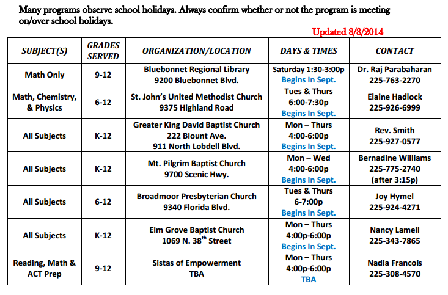

Below is the schedule for our volunteer tutors. See the timetable below for available tutoring session slots:

BetterFuture tutoring sessions are conducted during weekends only. Students are encouraged to check the available time slots in the schedule above before completing the registration form.
For more details or questions regarding schedule adjustments, please visit the Contact page.